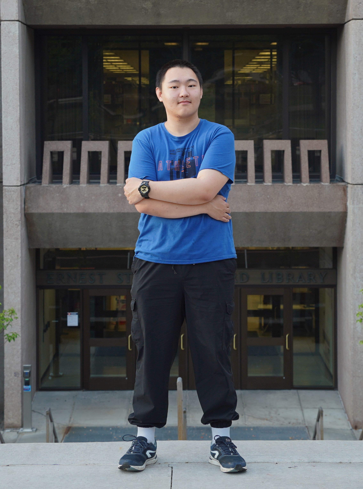

|

| Google Scholar | |
I am looking for Ph.D. opportunities for Fall 2026! Feel free to contact me if you are interested in my academic potentials. I am a final year undergraduate student at the Chinese University of Hong Kong, majoring in Artificial Intelligence. Previously, I was on exchange at UMass Amherst in Fall 2024. I was also a summer exchange student at UC Berkeley in 2022. I work on AI ethics, especially on the robustness and safety of Foundation Models. It was my fortune to work under the supervision of Prof. Michael R. Lyu and Dr. Wenxuan Wang (now Assistant Professor at Renmin University) at CUHK. I am currently working as a visiting research intern at ERIC Lab, UCSC, under the supervision of Prof. Xin Wang. |